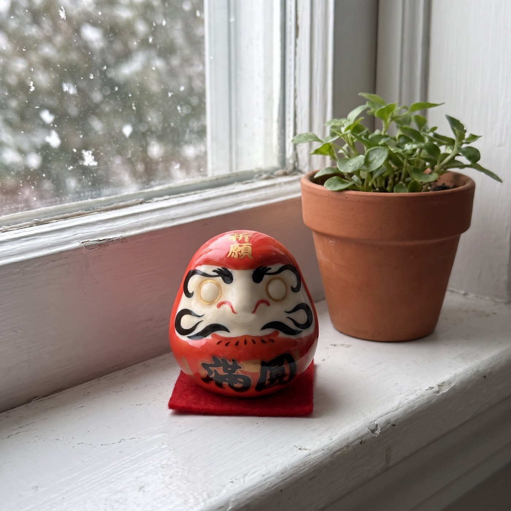
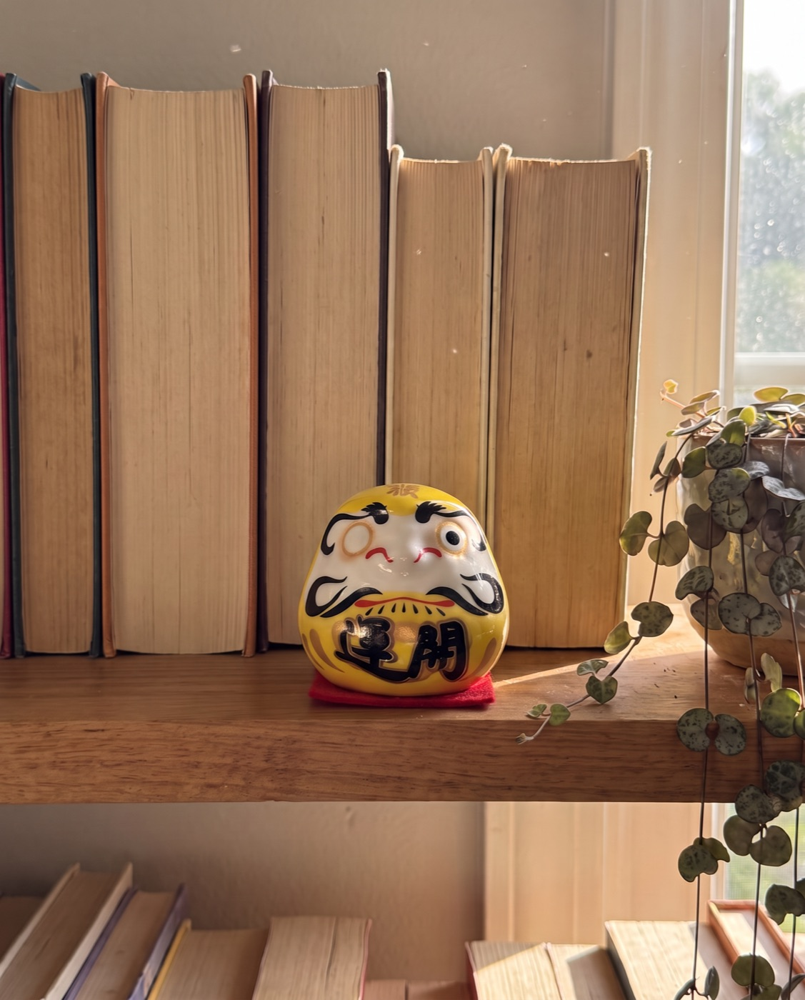

New Year traditions
Why Millions of People in Japan Start the New Year by Painting One Eye on a Doll
It's 400 years old, it takes one minute, and it might be the only New Year's resolution that stays in the room with you. 6 reasons it works.
Most of us start January with a list. In Japan, millions of people start it with a small round doll that has no eyes.
It's called a Daruma. You choose one goal, you paint one eye, and you put the doll somewhere you'll see it every day. The second eye stays blank until the goal is done.
We thought it sounded like a cute souvenir. Then we looked at why the tradition has lasted 400 years, while most resolutions don't last until February. Here are the 6 reasons that stuck with us.
1. It forces you to pick one thing
A resolution list has eight lines on it. A Daruma has one goal, and that's the point.
When you hold the brush, you can't paint an eye for "be healthier, save more, read more, call Mom". You have to decide what this year is actually about. Most people say that choice alone is the hardest and most useful part.

2. The promise has a face
A goal in a notes app disappears the moment you close the app. A goal on a doll on your desk doesn't.
The one painted eye looks back at you while you make coffee or answer email. People describe it the same way again and again: it's not pressure, it's a reminder that you said something out loud and meant it.
- A resolution list you lose by the second week
- A notes app you never reopen
- A vision board that ends up behind the wardrobe
- One goal, written down
- A small physical reminder you see every day
- A clear moment when it's finished
Official Daruma Ritual store · Free tracked shipping worldwide · 30-day returns
3. It's built for getting knocked over
Every Daruma is weighted at the base. Push it over and it rocks straight back up.
That's where the Japanese saying comes from: fall seven times, rise eight. The doll isn't a promise that the year will go smoothly. It's a promise that you'll get back up when it doesn't.
Fall seven times, rise eight.
4. The whole family can do it together
The ritual takes a minute, so it fits around a New Year's breakfast table as easily as a quiet desk. Many families give everyone their own color and paint the first eyes together on January 1st.
“Finally I was able to perform our first ritual with my daughter and her husband. I will be purchasing more sets to give to my other children. … this was a good way to have them set goals to focus on all of the good things in their lives.”
5. Every color means something
Red is the classic, for fortune and luck. The other colors each carry their own wish, so people match the doll to the goal: white for a new beginning, black for protection, yellow for safety, blue for calm and peace of mind.

6. There's a moment when it's over
Most goals just fade. A Daruma gives you a finish line: the day you pick up the brush again and paint the second eye.
In Japan, election candidates famously paint that second eye on election night, in front of the cameras. At home it's quieter, but people say it feels just as good.
- Day 1Choose one goal. Write it down and paint the first eye: the doll's own left, which is the one on your right as it faces you. Any black marker works (one isn't in the box).
- Every day afterThe Daruma sits where you'll see it: a desk, a shelf, a nightstand. One eye open, waiting.
- Week 4Look at it and ask yourself one honest question: what did I do this week toward the goal?
- The day it's donePaint the second eye. Keep it as a record, or start again with a new goal.
How to start your own on January 1st
You don't need to travel or learn anything about Japanese culture. You need one goal, a black marker, and a Daruma.
The Daruma Ritual Premium Set has five ceramic Daruma in the five classic colors, so you can keep one and give four to the people you'll be toasting at midnight. They come in a matte-black magnetic gift box with a velvet tray, the legend and the ritual printed on cards inside, and a small chiming Daruma keychain.

How to tell a real ritual set from a souvenir
- Both eyes arrive blank. That's the whole point: you paint them.
- Each colour carries a meaning, so you can match a doll to a goal.
- It comes with the story and the ritual written down, so the person receiving it knows what to do.
- It's weighted at the base, so it rocks back up when pushed over.
 1 Premium Set
1 Premium Set5 Daruma + 1 chiming keychain
2 Premium Sets10 Daruma + 2 keychains + $20 gift card free
3 Premium Sets15 Daruma + 3 keychains + $20 gift card free
Each set: 5 ceramic Daruma, matte-black magnetic box, legend & ritual cards. Free tracked shipping.
Official Daruma Ritual store · Free tracked shipping worldwide · 30-day returns
“I received my Daruma a few weeks ago and it has become a daily source of motivation for me. It reminds me to stay focused on my goals and to keep showing up. … Thank you for creating something so meaningful!”
“… I love the darumas and I would definitely buy more. I was able to gift the few as intended and keep one for myself.”
Is this for you?
This is for you if…
- You've had the same resolution for more than one January
- You'd like a New Year ritual to share with family or friends
- You want one goal you can see every day
Skip it if…
- You want a doll to do the work for you
- You prefer to keep goals entirely private and digital
Questions people ask
What exactly is in a set?
Five ceramic Daruma in red, white, black, yellow and blue, a matte-black magnetic gift box with a velvet tray, the legend & ritual cards, and a chiming Daruma keychain.
Is a pen or marker included?
No. Any black marker or brush pen works for the eyes.
Do I need to know anything about Japanese culture?
No. The ritual card in the box explains the steps in a minute.
How does shipping work?
Shipping is free and tracked to every country. The delivery estimate is shown at checkout; international post is slower in December, so order early for Christmas.
What if it's not right?
You have 30 days after it arrives to request a return.

Official Daruma Ritual store · Free tracked shipping worldwide · 30-day returns